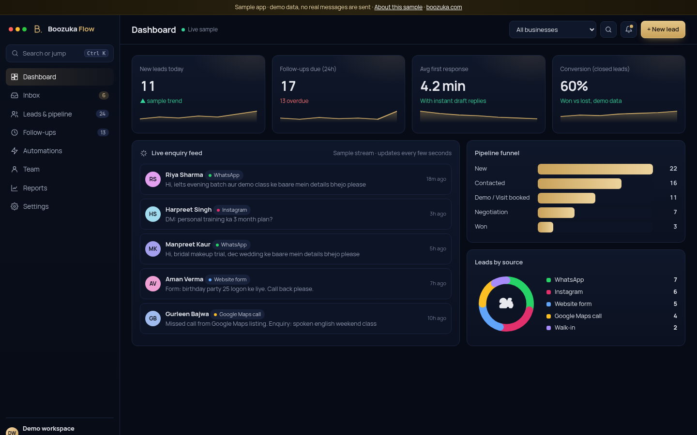

Every enquiry answered. Every follow-up on time.
Boozuka Flow puts WhatsApp, Instagram, website form, calls to the tracking number on your Google listing and walk-ins in one place. It drafts the reply, reminds your team when to follow up, and shows which leads are close to joining.

What it does
WhatsApp, Instagram and website messages in one list. Reply drafts are ready, and a person approves each one before it goes.
New, Contacted, Visit booked, Negotiation, Won or Lost. Search, filter by source or team member, and see a score for each lead.
Today, overdue and upcoming lists. A Day 0, 1, 3 and 7 WhatsApp sequence in easy Hinglish that you can edit.
Every message and call on one timeline, with notes, tags, the next follow-up date and who it is assigned to.
Build flows like "missed call from Maps → callback task in 15 minutes" with clear steps, and turn them on or off.
Leads per person, a response time leaderboard, conversion by source and by staff, a weekly trend and CSV export.
Want this for your business?
We build lead follow-up systems around how your team already works, for coaching, salons, cafes, gyms and more.